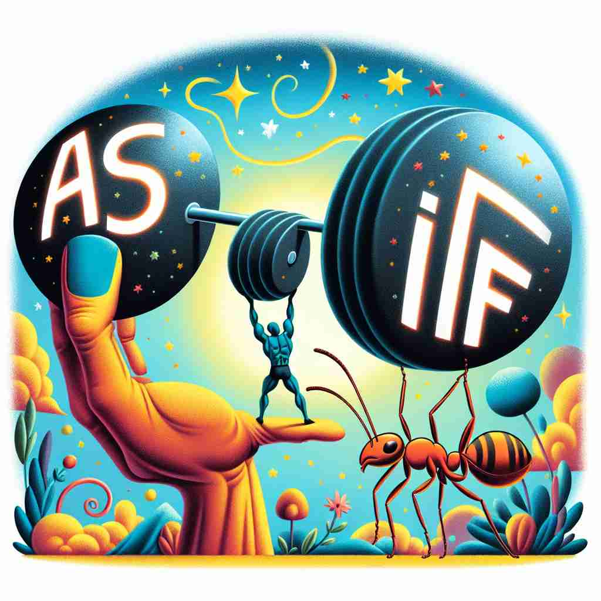

💬 The astronaut moves as if he is in space, making it look like a fun adventure. 宇航员的动作就像他在太空中一样，使整个过程看起来像是一场有趣的冒险。

💬 He acts as if he can lift the heavy weights with one hand. 他表现得好像可以用一只手举起重物。
💬 The astronaut moves as if he is in space, making it look like a fun adventure. 宇航员的动作就像他在太空中一样，使整个过程看起来像是一场有趣的冒险。
💬 He acts as if he can lift the heavy weights with one hand. 他表现得好像可以用一只手举起重物。
🧠 想象你在"假装"（as if）某事是真的。无论是描述行为、表达怀疑还是提出假设，都可以联想到这个"假装"的核心概念。这种假装或假设的思维贯穿了"as-if"的各种用法，有助于理解和记忆它的多重含义。
🗝️ conj./adv. in a way that suggests something is true when it is not 以一种暗示某事是真实的方式，但实际上并非如此。
🎭 在一个热闹的派对上，玛丽正开心地和朋友们聊天。她看到一个带着大奖杯回来的朋友，开玩笑地说：'哇，你表现得 as if 你真的赢了这次大赛！' 实际上，她知道这个朋友只是借来的奖杯。
💬 He acted as if he didn't know me. 他表现得好像不认识我。
🌳 短语由介词 'as'（如同）和连词 'if'（如果）构成，用于表示一种假设的情况，意指 '仿佛，彷似'。
💡 可将 'as-if' 视为 'as if it were true' 的简写，联想为一种可能并不真实的假设情境，以此帮助记忆这种表达的用法及含义。
🗝️ interj. used to express disbelief or scorn 用于表达怀疑或轻蔑
🎭 在学校的走廊里，一个学生吹嘘自己周末如何登上了珠穆朗玛峰。旁边的朋友笑着摇头，不屑地说：'Yeah, right, as if!' 表达了他对这番吹牛的不信任。
💬 As if! I don't believe a word you're saying. 没门！我半点都不相信你说的话。
🤔 基于核心含义的反讽用法
🗝️ conj. used to introduce a hypothetical situation 用于引入假设情况
🎭 在一个工作坊中，导师正带领大家进行头脑风暴。他让所有人闭上眼睛并想象：'Try to think as if you were the CEO of this company.' 让大家思考假如他们是公司CEO时会如何决策。
💬 She treats the dog as if it were her child. 她把这只狗当作自己的孩子一样对待。
🤔 引入一个假设的情况，类似核心含义中的"假装"
🗝️ conj. in the same way or manner that would occur if 以与...发生的方式或 manner相同的方式
🎭 在一个繁忙的马路上，交通灯突然失灵。一名警察挥动手臂，指挥车辆有序移动，仿佛他是交通灯一样，示意司机们按红绿灯行进的方式行驶。
💬 He ran as if his life depended on it. 他跑得就像他的生命取决于此一样。
🤔 表示以某种方式行事，仿佛某事是真的